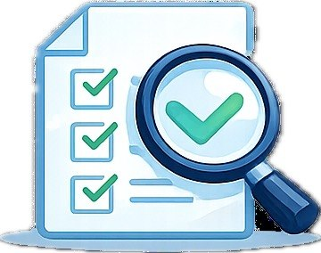

Reliable
I try to complete tasks properly and respect deadlines because responsibility builds trust.
INFORMATION MANAGEMENT STUDENT
Personal value
These strengths describe the way I approach study, teamwork, and future workplace responsibilities.
I try to complete tasks properly and respect deadlines because responsibility builds trust.
I am willing to ask questions, explore better methods, and learn from feedback.
I can adjust to new tools, new classmates, and different assignment requirements.
I pay attention to formatting, content order, spelling, and presentation quality.
